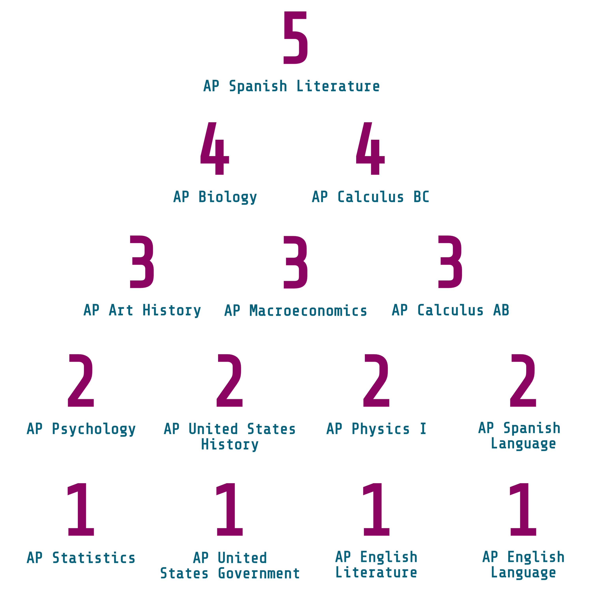

There are two things that would make fourteen year old Stacy feel
like she has unlimited power:
`
1. Pull an uno reverse
card on College Board and grade them.
2. Embrace my
Abby Lee Miller arc and make my very own Dance Moms pyramid
Now that I'm in college, one of my greatest goals is
to not have peaked in high school. And, this post is giving 1 step
forward + 3 steps back, but I think my commentary could be useful
to the high schoolers out there struggling to select classes.
Plus, this post is a great inauguration to the series of tier
lists that I will be posting throughout college; course
evaluations will never be enough for me.
I know that
every class has a unique purpose and the format of the course and
exam is designed to best assess the skills relevant to it. But,
for the sake of simplicity and objectivity, I will evaluate these
classes using a six-point rubric that I believe encompasses their
complexity into a score on 1-5 scale ;)
After a lot of thought and consideration, here is the rubric I
came up with:
Thesis (Purpose)
1 pt
|
0: Lowkey showed up to the test with 0 clue on how to
optimize my score, and just prayed for the best (yes I
googled the course and exam description)
|
1: I knew what was expected of me, so I could slay if I
wanted to
|
Contextualization (Relevance)
1 pt
|
0: Help me this is so boring, I will never use this again, I
have no motivation to study for this class
|
1: This is so interesting, tell me more |
Evidence (Content)
2 pts
|
0: I learned a lot, but none of it was useful for the exam
HELP
0: They did not plan how they were gonna
teach this in year, I lowkey have no idea what's going on /
We did not finish the content by the AP exam SOB
|
1: Everything I learned was relevant in the exam; I knew
what I had to know on test day WEEE
1: This class
was well-paced; I was able to group content together to
study and target my weaknesses
|
Reasoning (Well-Taught)
1 pt
|
0: Give me my salary and benefits because I taught myself
most of the stuff
|
1: Love the teacher (I feel super guilty about giving them
rankings); teachers KNOW their stuff
|
Sophistication
1 pt
|
0: I did not come out of this class feeling like a changed
woman; I did not learn anything outside of exam content -16%
>:(
|
1: This class has inspired me; I feel so knowledgeable; I
would take this class again and again, lowkey / it has given
me an enlightening perspective on the world as a whole
|
Now that I have established my grading criteria, I will share my
ultimate AP pyramid; drum roll please…

So, here's my commentary for each class:
AP Spanish Literature: 1 / 1 /
2 / 1 / 1
For most people, this class was a hit or miss. For
me, it was a complete hit. I knew what was expected of me and the
class was structured incredibly well. Despite its focus on
literature and analysis, I learned so much about history and
literary and artistic movements; a lot of my knowledge crossed
over to other classes. The works we studied were actually amazing,
some of my favorite pieces of literature come from this class. My
teacher loved reading literature, so he provided us with great
insight into the literature. I felt that this class helped me
discover and connect with literature in my mother tongue.
AP Biology: 1 / 1 /
2 / 1 / 0
Biology is by far the best structured AP class. The
course and exam description itself was enough to study and revise
the content for the exam. I went into it feeling very prepared,
and I knew what I was expected to learn. The class was also very
interesting; I even considered pursuing a bio major because of it.
Last but not least, my teacher was ABSOLUTELY AMAZING. She was so
knowledgeable and passionate about the field, knew how to break
down concepts, and was the right amount of rigorous. Quite
frankly, this class made me a better student.
AP Calculus BC: 1 / 1 / 2 / 1 / 0
Calc BC was one of the classes that I
felt very confident in. I came out of the class feeling very
comfortable in calculus. Series and parametrics changed my way of
thinking about math, which has helped me conceptualize more
difficult topics in college. My teacher was fabulous, so I was
able to get a lot of practice before the exam, even though it was
COVID year. It didn't change my perception of the world, but it
got the job done.
AP Art History: 1 / 0 / 1 / 1 / 1
Art History is one of those classes that
rely heavily on memorization, so you knew what you had to do but
you weren't invested in the class. As a result, the content was
super relevant to the exam, but the structure of review,
memorization, and go was kind of a flop. My teacher was wonderful
though and did the best she could to keep us engaged. I do,
however, feel like I came out of the class understanding history
and culture a lot more deeply; it gave me a completely new
skillset.
AP Macroeconomics: 1 / 1 / 2 / 0 / 0
AP Macro was actually a pretty fun
class. I learned something completely new and got to use some of
my logic skills. I felt prepared for the exam throughout the class
and everything we learned gave me a solid introduction to
economics. My teacher was very intelligent, but he wasn't the best
at explaining things. So, since this was a completely new subject,
I had to do a significant amount of self teaching. The class
simplified a lot of econ, so almost everything I learned was not
really applicable outside of class.
AP Calculus AB: 1 / 0 / 2 / 1 / 0
I took this class as a prerequisite for
Calc BC, so I felt like I got a solid foundation for calculus. I
knew how to perform well on the exam, and everything we learned
was relevant. I had the same teacher for both classes, so,
naturally, the teaching was great. I just found this class a
little less interesting since I hadn't really learned any
applications of calculus yet.
AP Psychology: 0 / 1 / 1 / 1 / 0
Quite frankly, on exam day, I had very
little clue what I was doing. I went through the class and learned
the material, but I never really understood how it would be
assessed. It seemed like they would throw random vocab words at
you and ask you to explain them in context, which is hard to
prepare for. A lot of the content was interesting though;
explaining human behavior encourages a lot of reflection and
thought. This class was mostly memorization, so the content was
relevant. I just wish they relied less on definitions and more on
encouraging thinking and hypothesizing.
AP United States History: 0 / 1 / 1 / 1 / 0
It's the way that the second DBQ I wrote
in my life was the exam DBQ. APUSH is one of the hardest AP
classes, and I felt it was really hard to prepare for it. I felt
like I had to change my thinking to “what would College Board
think” and develop a lot of exam strategies. This resulted in the
class feeling like an SAT part 2. The class did give me a lot of
new insight on US History. It is way too packed, though; we did
not finish the course content by exam day. My teacher was pretty
good, and she made the class as engaging as it could be.
AP Physics I: 0 / 0
/ 2 / 1 / 0
This class was so SKULL. I did a lot of exam
practice using past exams, but when I would use AP Classroom, a
lot of the questions were in a completely different style. The
exam ended up mirroring AP Classroom SOB. They also got rid of two
units about a month before the exam and made most of the exam on
collisions. So, if you didn't master collisions, it was incredibly
difficult. Overall, I just felt unprepared for the test. AP
Physics I is a lot of memorization, so the content was relevant to
the course but not to real life. I wish I had learned
calculus-based physics instead. It was helpful when it came to
conceptualizing physics in college, but I felt as experienced as
someone that was brand new to physics.
AP Spanish Language and Culture: 1 / 0 / 1 / 1 / 0
I went into the AP Spanish exam feeling
like I had a template in my head for every response. So, I felt
prepared. However, the rest of the class felt super random. A lot
of the content we learned about social media, beauty standards,
and environmentalism never appeared on the exam, though it was
well structured. My teacher was a good amount of rigorous; she
gave us feedback such that we could improve and target a good
score on the exam.
AP Statistics: 1 / 0 / 1 / 0 / 0
I will always say that AP stats was a
bunch of fake math; a lot of the formulas and concepts we learned
felt arbitrary, and I did significantly more writing than math.
Stats highkey felt like the humanities of math. I knew what I had
to know, but I could not make myself interested in it. I did
appreciate the structure of the class though; by the end of it, I
was able to connect all the concepts and answer FRQs. I hate
giving this class a 0 in teaching because my teacher is one of the
kindest people, but I feel like no one can teach this class. It's
far too boring and oversimplified to be able to properly teach it.
AP United States Government: 0 / 1 / 1 / 0 / 0
This class was by far the more relevant
AP class I took. However, it was a weird combination of
vocabulary-based and argument-based, such that I had a mega
quizlet but also needed to know how to write. The content we
learned was relevant but a lot of it was repetitive so the course
structure was a little unclear. However, since a lot of what was
discussed was relevant, the class was near intuitive.
AP English Literature: 0 / 0 / 1 / 0 / 0
Ranking English classes last is giving
major STEM energy, but, objectively, these classes felt so random.
I went into the exam not really knowing what to do. All of the AP
Dailys just echoed the course rubric, so it was quite difficult to
prepare for the exam; you didn't know what to expect. The stories
we read and essays I wrote in class did give me a little
preparation, so I would say the content was as relevant as it
could've been. Needless to say, my teacher tried her best, and I
appreciate her, but this course is far too unpredictable for her
to have done better.
AP English Language: 0 / 0 / 0 / 1 / 0
Last and least, AP English Language anI
have 0 memories of this class. We finished the course content in
one semester and then read Gatsby for the rest of the year. This
class was the ultimate unpredictable AP course. It felt like we
just learned some key buzz words and hoped for the best. My
teacher did try her best to help us digest the rubric and learn
the required skills. It was just very difficult to apply without
extra practice.
Soooo, thank you for coming to my venting session. Though I didn't
get much credit for the AP classes I took in high school, I still
don't truly regret taking any of them. I felt like they each
taught me something new, whether it was “how to market a bad
essay” or “practice makes permanent.” I learned how to adapt,
memorize, and survive.
Moral of the story: AP builds character ;)
Disclaimer: The following post reflects solely my personal
experience in high school and is not intended to be a universal
evaluation of the classes mentioned. The opinions expressed are
based on my own preferences and learning style. I do not intend
to criticize or belittle the hard work and dedication of any of
my teachers, as I acknowledge their efforts to provide quality
education. Rather, my intention is to share my perspective on
the classes I took and how they impacted my academic journey. I
encourage readers to keep in mind that their own experiences may
differ and to approach this post with an open mind.